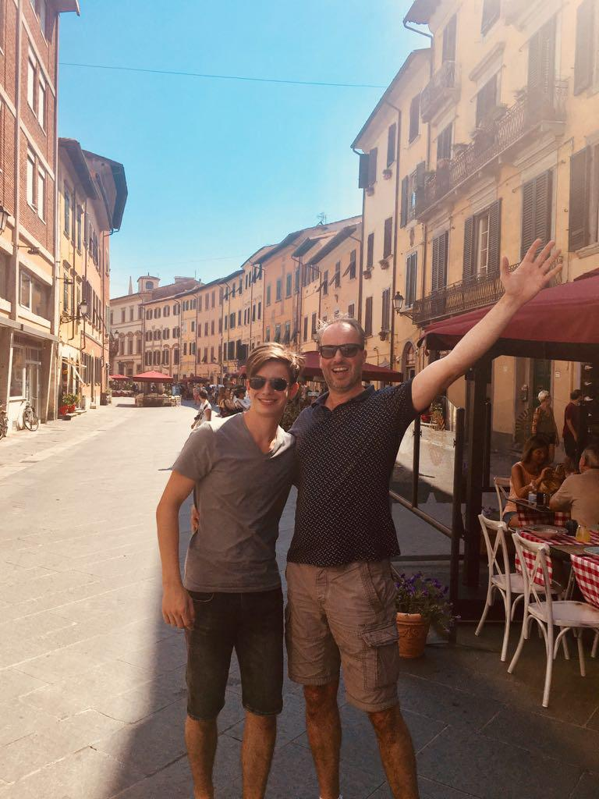

Wie ben ik. Laat ik maar beginnen met mijn naam. Mijn naam is daniël t'Lam. Ik ben 16 jaar oud en geboren op 30 december 2001. Ik woon in Burgstraat 4, Giessen, samen met mijn ouders en twee zusjes. Klinkt interessant. Want op de volgende pagina's ga ik vertellen over mijn opleiding en mijn bijbaan.